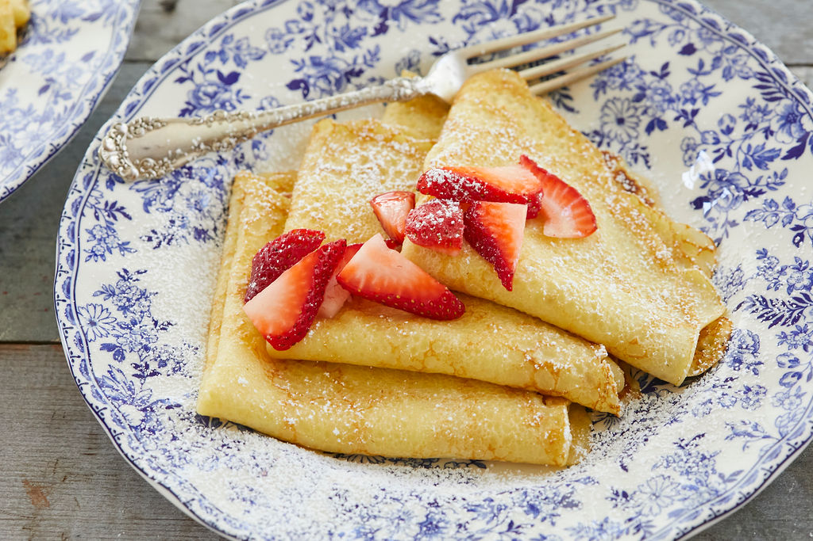

Best Crepes Ever

Description:
Delicate crêpes always create an impressive display, but making them is surprisingly easy.
And because they play well with both sweet and savory fillings, these super-thin French
pancakes are versatile enough to serve for breakfast, lunch, dinner, and dessert.